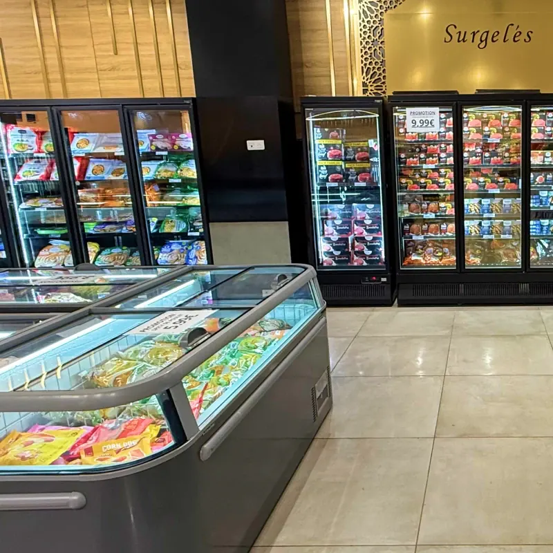
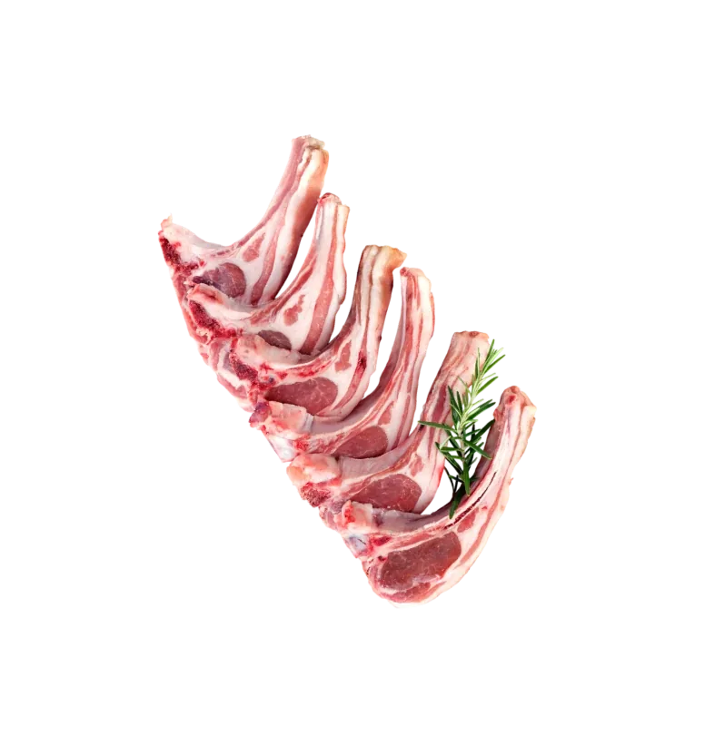
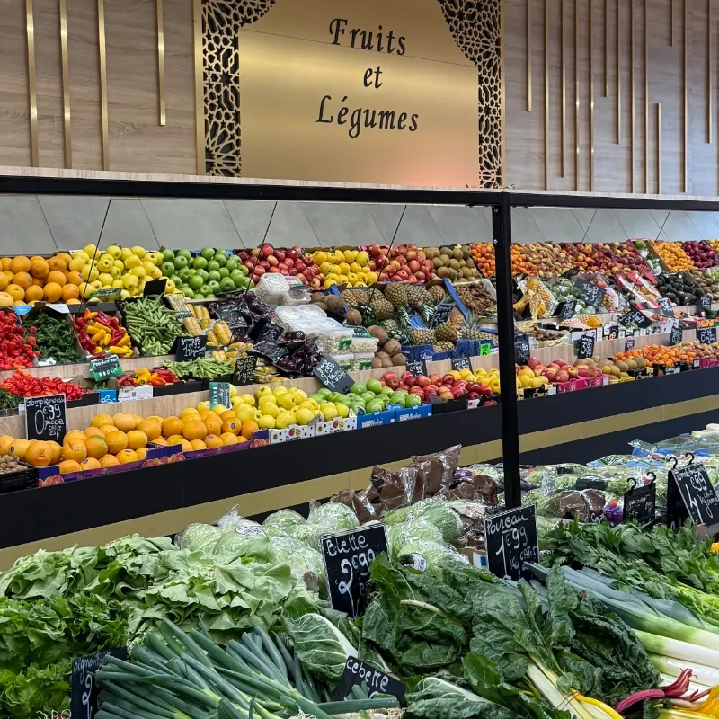
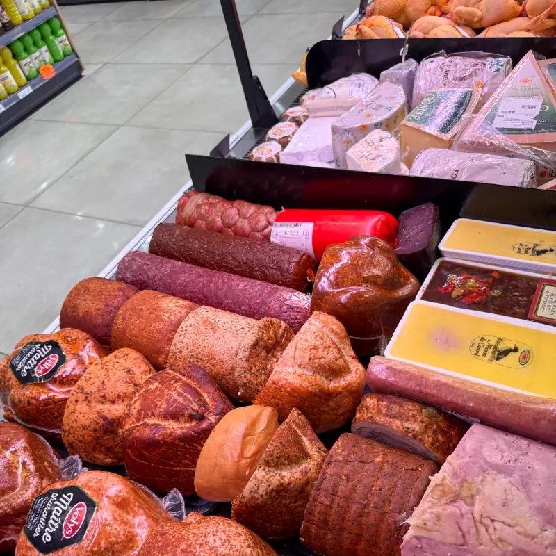
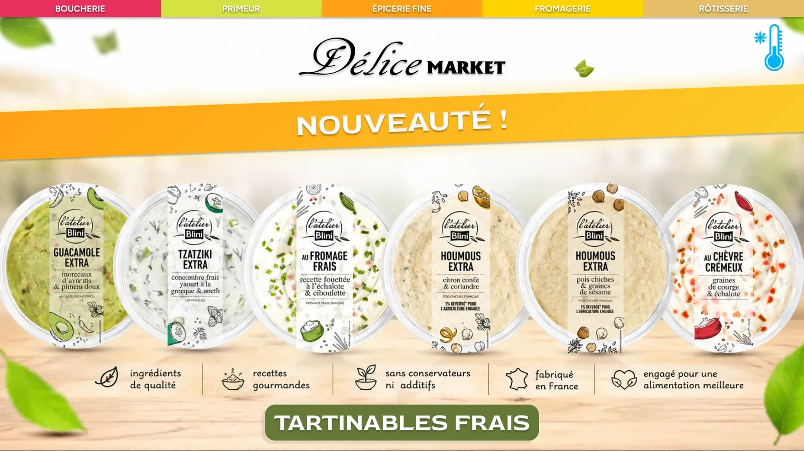
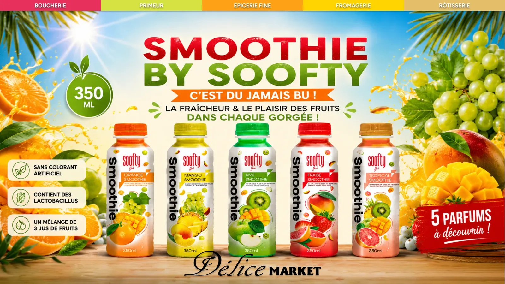
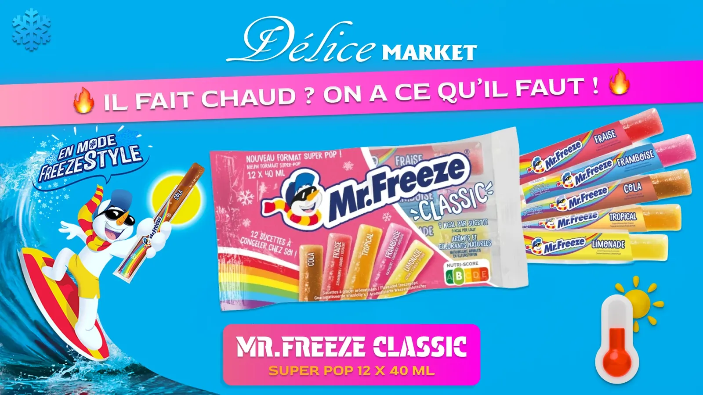

Viande française, découpe et conseils au comptoir.

Supermarché · Gap
Le concept qui a conquis Manosque s'installe dans les Hautes-Alpes : un supermarché halal complet, frais et accessible, dans l'ancien Supeco de la ZAC de Fontreyne.
Ouvert 7j/7 · 8h30 – 21h
Délice Market · Gap
Après le succès de Manosque, Délice Market ouvre son deuxième supermarché à Gap, rue des Mimosas, dans la zone commerciale de Fontreyne.
Vous y retrouvez la même promesse : une boucherie halal avec de la viande française, des fruits et légumes frais chaque jour, une grande épicerie orientale et méditerranéenne, et toutes vos courses du quotidien en un seul passage.

Dans la boutique
Tout ce qu'il faut pour vos repas du quotidien, en un seul passage.
Viande française, découpe et conseils au comptoir.
 Primeur
Primeur

Le frais du jour, à prix justes.
 Épicerie orientale
Épicerie orientale

Épices, huiles, conserves, pâtisseries.

Charcuterie halal à la coupe, fromages.
 Rôtisserie
Rôtisserie

Poulets rôtis le week-end.

Surgelés, hygiène, beauté, entretien.
Au comptoir
Faites glisser la vitrine pour tout voir. Prix affichés en boutique.
 Brochettes & marinadesHalal
Le comptoir boucherie : marinades maison prêtes à griller.
Brochettes & marinadesHalal
Le comptoir boucherie : marinades maison prêtes à griller.
 Côte de bœufFrance
Viande française fraîche, découpe à la demande.
Côte de bœufFrance
Viande française fraîche, découpe à la demande.

Côtelettes d'agneauFrance Conseils et découpe par nos bouchers.
Poulet rôtiVen · Sam · Dim
Doré à la broche, avec ses accompagnements.

Fruits & légumes du jourArrivage quotidien Fraîcheur et prix justes, tous les jours.
Tomates & poivronsArrivage quotidien
Pour vos salades, chorbas et légumes farcis.
 Olives au détailMéditerranée
Vertes, noires, cassées, marinées : servez-vous.
Huiles, sauces & épicesÉpicerie orientale
Harissa, ras el hanout, huiles d'olive, conserves…
Charcuterie halal à la coupeHalal
Pastrami, mortadelle, dinde fumée, tranchés devant vous.
Olives au détailMéditerranée
Vertes, noires, cassées, marinées : servez-vous.
Huiles, sauces & épicesÉpicerie orientale
Harissa, ras el hanout, huiles d'olive, conserves…
Charcuterie halal à la coupeHalal
Pastrami, mortadelle, dinde fumée, tranchés devant vous.

Fromages variésFromagerie Pour vos plateaux, sandwichs et recettes.
Tartinables fraisNouveauté Houmous, caviar d'aubergine, tzatziki… sans conservateur.
Smoothie by SooftyNouveauté 350 ml, 5 parfums à découvrir, sans colorant.
Mr.Freeze ClassicSurgelés Le format géant 12 × 40 ml pour l'été.En ce moment
En images
Photos du magasin de Manosque — à remplacer par les photos du magasin de Gap.
Avis Google
Ce que les clients disent déjà de Délice Market (Manosque)
4,7★★★★★avis Délice Market Manosque
« Des bouchers très gentils et accueillants, même à l'heure de fermeture. Ils sont très professionnels et vous servent toujours avec le sourire. La viande est de qualité, le magasin est très propre. »
Jakatro
« Magasin très bien, rangé et organisé. Un large choix, une large gamme halal. Personnel très accueillant et sympathique. »
Mehdi Azedine
« Très bon accueil. Magasin ouvert le dimanche et bien achalandé. »
Carine Peloux
Nous trouver
Rue des Mimosas, ZAC de Fontreyne, 05000 Gap
Ouvert 7 jours sur 7, de 8h30 à 21h
Ouvert 7j/7 · 8h30 – 21h
La famille Délice
Entrer
Supermarché · Manosque
Délice Market
544 Av. Frédéric Mistral, 04100 Manosque
Ouvert 7j/7 · 8h30 – 21h
Entrer
Boucherie · Manosque
Boucherie Délice
14 bis Av. du Majoral Raoul Arnaud, 04100 Manosque
Ouvert 7j/7 · 8h – 19h
 Entrer
Boucherie · Digne-les-Bains
Délice Boucherie
7 Rue André Honnorat, 04000 Digne-les-Bains
Ouvert 7j/7 · 8h30 – 19h
Entrer
Primeur · Manosque
Délice Primeur
327 Av. Frédéric Mistral, 04100 Manosque
Ouvert 7j/7 · 6h – 21h
Entrer
Boucherie · Digne-les-Bains
Délice Boucherie
7 Rue André Honnorat, 04000 Digne-les-Bains
Ouvert 7j/7 · 8h30 – 19h
Entrer
Primeur · Manosque
Délice Primeur
327 Av. Frédéric Mistral, 04100 Manosque
Ouvert 7j/7 · 6h – 21h